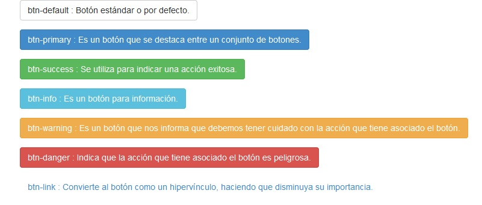

Para crear botones Bootstrap propone utilizar la marca "button" y define una serie de clases:
btn btn-default btn-primary btn-success btn-info btn-warning btn-danger btn-link
Siempre debemos asignar la clase btn y alguna de las otras clases con un significado propio.
Cada una de estas clases define un estilo particular para un botón y tiene un significado que nos ayudan a definir en que caso los debemos utilizar:
Mostrar una lista de button asociando a cada uno una clase distinta propuesta por Bootstrap y mostrando como leyenda su significado.
<!DOCTYPE html>
<html>
<head>
<title>Prueba de Bootstrap</title>
<link href="css/bootstrap.min.css" rel="stylesheet">
<meta name="viewport" content="width=device-width, initial-scale=1">
</head>
<body>
<div class="container">
<form role="form">
<div class="form-group">
<button type="submit" class="btn btn-default">
btn-default : Botón estándar o por defecto.</button>
</div>
<div class="form-group">
<button type="submit" class="btn btn-primary">
btn-primary : Es un botón que se destaca entre un conjunto de botones.</button>
</div>
<div class="form-group">
<button type="submit" class="btn btn-success">
btn-success : Se utiliza para indicar una acción exitosa.</button>
</div>
<div class="form-group">
<button type="submit" class="btn btn-info">
btn-info : Es un botón para información.</button>
</div>
<div class="form-group">
<button type="submit" class="btn btn-warning">
btn-warning : Es un botón que nos informa que debemos tener
cuidado con la acción que tiene asociado el botón.</button>
</div>
<div class="form-group">
<button type="submit" class="btn btn-danger">
btn-danger : Indica que la acción que tiene asociado el botón
es peligrosa.</button>
</div>
<div class="form-group">
<button type="submit" class="btn btn-link">
btn-link : Convierte al botón como un hipervínculo, haciendo
que disminuya su importancia.</button>
</div>
</form>
</div>
</body>
</html>
El resultado de ejecutar este página es:
Utilizar este estándar ayuda que nuestros visitantes se sientan muy cómodos navegando nuestro sitio ya que seguramente ha visitado otros sitios que lo utilizan.
Ya asociarán el color azul en un botón con un botón importante del sitio, el amarillo con acciones que debemos tener cuidado, el rojo con acciones peligrosas (por ejemplo borrar una cuenta) etc.